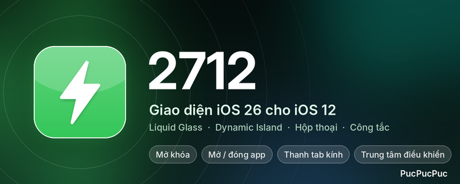

2712
PucPucPuc · 5.4.2 · iOS 12 (arm64, rootful)
Giao diện iOS 26 (Liquid Glass) cho iOS 12, tối ưu iPhone 6.
- Mở khóa & về Home: icon lan từ tâm ra
- Mở / đóng app: thẻ app phóng ra từ icon, nghiêng theo vị trí
- Thanh tab kính nổi với thấu kính lỏng
- Trung tâm điều khiển & phím mật mã có viền kính
- Hộp thoại kiểu iOS 26
- Dynamic Island ảo: hẹn giờ, bấm giờ, báo thức, nhạc, cuộc gọi
Cài đặt tại Cài đặt › 2712. Ý tưởng từ 26Unlock của blu_tek.